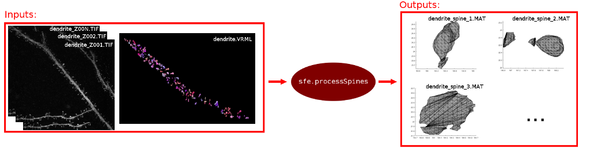
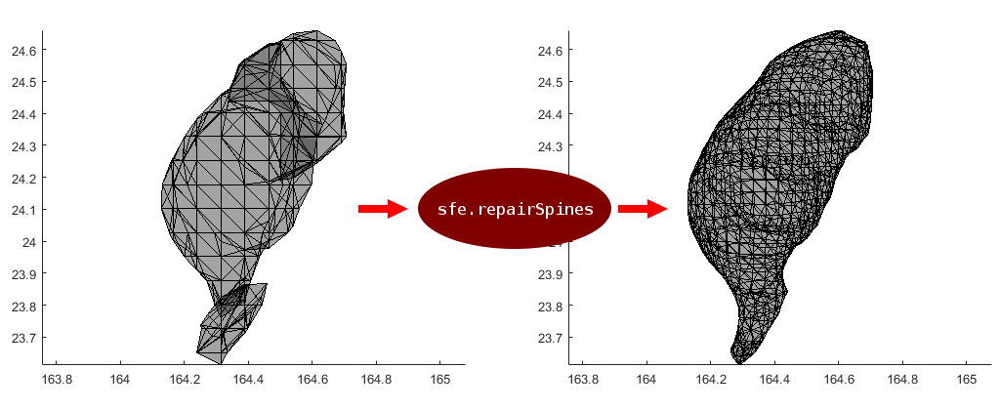
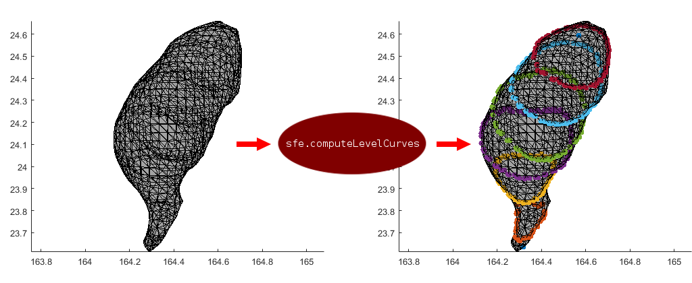
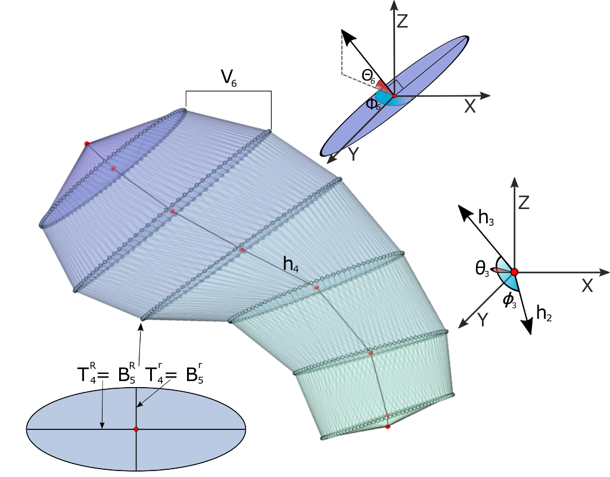

Walkthrough
3DSpineMS SFE provides newsfe class which exposes up to five public functions for using the tool in different ways:
- processSpines : Processes dendrites TIF and VRML files to obtain spines .MAT files.
- repairSpines : Repairs spines fragmentation and their neck.
- computeLevelCurves : Computes spines level curves.
- extractFeatures : Computes and extracts spines features.
- runAll : Runs all previous functions.
Contents
Creating a sfe instance
To start using the tool, creating a new sfe is needed. The newsfe constructor expects one parameter:
- OutputPath : The absolute path to the folder where output files will be saved. For example: C:/3DSpineMS/sfe/data
Usage:
sfe = newsfe('C:/3DSpineMS/sfe/data');
Processing spines (processSpines)
The first step that can be performed with this tool, is to process the spines, which means to convert TIF and VRML dendrite source files to spine matlab matrices (.MAT files).

This function needs the following input parameters:
- root_TIF : Path to the dendrite TIF files, can be a compressed .ZIP file or a folder. For example: C:/3DSpineMS/sfe/sources/root_TIFs.zip
- root_VRML : Path to the dendrite VRML files, can be a compressed .ZIP file or a folder. For example: C:/3DSpineMS/sfe/sources/root_VRMLs.zip
Usage:
root_TIF = 'C:/3DSpineMS/sfe/sources/root_TIFs.zip'; root_VRML = 'C:/3DSpineMS/sfe/sources/root_VRMLs.zip'; sfe.processSpines(root_TIF, root_VRML);
Resulting .MAT files will be saved into a folder called SPINE_MAT located inside output folder configured when sfe instance was created.
Note: If .ZIP files are choosed as inputs, their contents will be decompressed into the folders called DENDRITE_TIF and DENDRITE_VRML inside output folder configured when sfe instance was created.
Repairing spines (repairSpines)
This step is for repairing spines fragmentation and also their neck. A spine is fragmented when the VRML 3D model contains more than one part. Reparation process is to try to merge all parts into one.
There are three fragmentation levels:
- Correct.
- Partially fragmented.
- Fragmented.

This function needs the following input parameters:
- root_MAT : Path to the spines .MAT files, can be a .ZIP file or a folder. For example: C:/3DSpineMS/sfe/data/SPINE_MAT, (output of processSpines which is commonly used before repairSpines).
- root_ipoints : Path to the dendrite insertion points VRML files, can be a .ZIP file or a folder. For example: C:/3DSpineMS/sfe/sources/root_insertion_points.zip.
Usage:
root_MAT = 'C:/3DSpineMS/sfe/data/SPINE_MAT'; root_ipoints = 'C:/3DSpineMS/sfe/sources/root_insertion_points.zip'; sfe.repairSpines(root_MAT, root_ipoints);
Reparation process will generate three files in the output folder containing the paths of the spines depending their fragmentation level. Filenames are as follows:
- CORRECT_SPINES_PATHS.txt for correct ones.
- PARTIALLY_FRAGMENTED_SPINES_PATHS.txt for partially fragmented ones.
- FRAGMENTED_SPINES_PATHS.txt for fragmented ones.
Repaired spines will be saved in the output folder into a folder called SPINE_REPAIRED.
This process also performs spine neck reparation which is to rebuild the neck of those spines which do not appear to be attached to the dendrite. Spines with repaired neck will be saved in the output folder into a folder called SPINE_NECK_REPAIRED.
Computing level curves (computeLevelCurves)
This step is for computing spine level curves. The spine level curves help to define the morphology of the spine. This curves are useful for extracting spine features and also for being able to rebuild the spine and simulate new ones.
Those spines which are considered bad (double curve defect) can be removed automatically or manually. If manual removing is choosed, the user will be asked for the correctness of the spine which is currently rendered.
- If the spine is correct, the user must press Enter.
- If the spine is bad, the user must press D (delete) and then Enter. This will remove the spine from the folder to avoid a future feature extraction.

This function needs the following input parameters:
- root_neck_repaired : Path to the folder with repaired spines used to calculate their level curves. For example: C:/3DSpineMS/sfe/data/SPINE_NECK_REPAIRED, (output of repairSpines which is commonly used before computeLevelCurves).
- num_curves : Number of computed level curves. For example: 8.
- remove_auto : If is TRUE, those spines with double curve defect will be removed automatically, otherwise user will be asked for removing spines which could present double curve defect. For example: true.
- threshold : Used to decide when double curve defect exists. The smaller the threshold value, the more the number of double curve defects detected. For example: 2.
Usage:
root_neck_repaired = 'C:/3DSpineMS/sfe/data/SPINE_NECK_REPAIRED';
num_curves = 8;
remove_auto = true;
threshold = 2;
sfe.computeLevelCurves(root_neck_repaired, num_curves, remove_auto, threshold);
Or, if we want check spines with possible double curve defect and remove them manually:
root_neck_repaired = 'C:/3DSpineMS/sfe/data/SPINE_NECK_REPAIRED';
num_curves = 8;
remove_auto = false;
threshold = 2;
sfe.computeLevelCurves(root_neck_repaired, num_curves, remove_auto, threshold);
After computing level curves, .MAT files inside root_neck_repaired folder will be updated including a cell array with the curves data.
Extracting features (extractFeatures)
Feature extraction is the main step of this tool. Given repaired spines with computed level curves, a feature set for each spine can be extracted. Computed features are as follows:
- Height (h_{i}): This variable measures the length of the vector h_{i} between the centroids of two consecutive ellipses. The higher the value of this variable, the longer the spine in that region.
- Major axis of ellipse (B_R_{i}): It is the length of the major axis of the ellipse. Low values denote that spine is thin around B_R_{i}.
- Minor axis of ellipse (B_r_{i}): It is the length of the minor axis of the ellipse. It gives information about the squishiness of the spine when it is compared with B_R_{i}. If B_R_{i} and B_r_{i} have similar values the ellipse is in fact a circle while B_r_{i} gets smaller the ellipse becomes more squished.
- Ratio between sections (φ_{i}_{j}): It is the ratio between the area of the ellipses i and j. If it is higher than 1 it means that ellipse j is bigger than ellipse i . When values are between 0 and 1 it means that ellipse i is bigger than ellipse j . It can be interpreted as the widening or narrowing along the spine. We compare bottom (i=2) with middle (j=4) and top (j=4) and middle (i=4) with top (j=6) so 3 variables were computed.
- Growing direction of the spine: The vector between ellipses h_{i} defines a direction which can be expressed in spherical coordinates, i.e., an azimuth angle phi and an elevation angle theta.
- cos( Φ_{i}): Cosine of the azimuth or azimuthal angle, obtained as the angle between two vectors. The first vector is defined by connecting the centroids of the ellipses separating the i -th and (i-1) -th regions. The second vector is determined by the centroids connecting the ellipses separating the (i+1) -th and i -th regions. It measures the tortuosity of the spine.
- θ_{i}: The polar angle, also called colatitude in the spherical coordinate system. It is just needed for simulation.
- Instant direction: It is the direction of the perpendicular vector to ellipse B_i. Meanwhile “growing direction” is the mean direction of a region, this quantity is the direction of the spine for a concretely value of the geodesic distance. From a mathematical point of view, “growing direction” can be understood as the slope of a function and “instant direction” as the derivate. To compute this vector the ellipse is rotated to the plane XY according to principal component analysis. Then, from B_R_{i} x B_r_{i} the vector is obtained. It is expressed in spherical coordinates.
- Θ_{i}: The polar angle or colatitude in spherical coordinate system. It is the inclination of the vector perpendicular to the ellipse with respect to Z axis. If it is 0 then the spine grows horizontally at that point. When it is Π/2, it means that the spine grows completely vertical at that point. It is just needed for simulation.
- Φ_{i}: The azimuth or azimuthal angle. It indicates if the spine is growing to the right, left, forward or backward as it was previously explained for the growing direction but in this case it is computed for the perpendicular vector to the ellipse. It is just needed for simulation.
- Volume (V): It is the total volume of the spine.
- Volume of each region (V_{i}): It is an approximation of the volume between two consecutive ellipses. It is computed from the convex hull of T_{i} and B_{i}.

This function needs the following input parameters:
- root_neck_repaired : Path to the folder that contains repaired spines with computed level curves used to compute their features. For example: C:/3DSpineMS/sfe/data/SPINE_NECK_REPAIRED, (output of computeLevelCurves which is commonly used before extractFeatures).
- output_csv_filename : The name of the output CSV file with all computed features. This parameter is optional, if not set, the output file name will be EXTRACTED_FEATURES.csv.
Usage:
root_neck_repaired = 'C:/3DSpineMS/sfe/data/SPINE_NECK_REPAIRED';
sfe.extractFeatures(root_neck_repaired);
Or, if we want to set a custom output file name:
root_neck_repaired = 'C:/3DSpineMS/sfe/data/SPINE_NECK_REPAIRED'; output_csv_filename = 'CUSTOM_NAME.csv'; sfe.extractFeatures(root_neck_repaired, output_csv_filename);
Resulting .CSV file with computed features will be saved in the root of the output folder configured when sfe instance was created.
Running all steps (runAll)
This function runs secuentially all steps described previously. So spines will be processed, repaired, computed their level curves and extracted their features.
The following parameters are needed:
- root_TIF : Path to the dendrite TIF files, can be a compressed .ZIP file or a folder. For example: C:/3DSpineMS/sfe/sources/root_TIFs.zip
- root_VRML : Path to the dendrite VRML files, can be a compressed .ZIP file or a folder. For example: C:/3DSpineMS/sfe/sources/root_VRMLs.zip
- root_ipoints : Path to the dendrite insertion points VRML files, can be a .ZIP file or a folder. For example: C:/3DSpineMS/sfe/sources/root_insertion_points.zip.
- num_curves : Number of computed level curves. For example: 8.
- remove_auto : If is TRUE, those spines with double curve defect will be removed automatically, otherwise user will be asked for removing spines which could present double curve defect. For example: true.
- threshold : Used to decide when double curve defect exists. The smaller the threshold value, the more the number of double curve defects detected. For example: 2.
- output_csv_filename : The name of the output CSV file with all computed features. This parameter is optional, if not set, the output file name will be EXTRACTED_FEATURES.csv.
Usage:
root_TIF = 'C:/3DSpineMS/sfe/sources/root_TIFs.zip'; root_VRML = 'C:/3DSpineMS/sfe/sources/root_VRMLs.zip'; root_ipoints = 'C:/3DSpineMS/sfe/sources/root_insertion_points.zip'; num_curves = 8; remove_auto = true; threshold = 2; sfe.runAll(root_TIF, root_VRML, root_ipoints, num_curves, remove_auto, threshold);
Or, if we want check spines with possible double curve defect and remove them manually:
root_TIF = 'C:/3DSpineMS/sfe/sources/root_TIFs.zip'; root_VRML = 'C:/3DSpineMS/sfe/sources/root_VRMLs.zip'; root_ipoints = 'C:/3DSpineMS/sfe/sources/root_insertion_points.zip'; num_curves = 8; remove_auto = false; threshold = 2; sfe.runAll(root_TIF, root_VRML, root_ipoints, num_curves, remove_auto, threshold);
Or, if we want to set a custom output file name:
root_TIF = 'C:/3DSpineMS/sfe/sources/root_TIFs.zip'; root_VRML = 'C:/3DSpineMS/sfe/sources/root_VRMLs.zip'; root_ipoints = 'C:/3DSpineMS/sfe/sources/root_insertion_points.zip'; num_curves = 8; remove_auto = true; threshold = 2; output_csv_filename = 'CUSTOM_NAME.csv'; sfe.runAll(root_TIF, root_VRML, root_ipoints, num_curves, remove_auto, threshold, output_csv_filename);
Executing this function will generate all outputs of previously described steps.